Maple Cream Doughnuts | Baked | Gluten-Free | Vegan | Yeast-Free
These Maple Cream Doughnuts are gluten-free, vegan, yeast-free, and baked. They are soft, lofty doughnuts filled and topped with a velvety maple cream that made me buckle at the knees. It has a rich maple/butterscotch flavor that will leave you scratching your head after I share with you what it is made from! It’s going to blow your mind. I try never to oversell my recipes when I talk about them… but this one… this maple cream is something special. The baked dough isn’t as light and airy as its deep-fried, yeast-air-pocket counterpart, but it doesn’t lack flavor, texture, or nutrients.
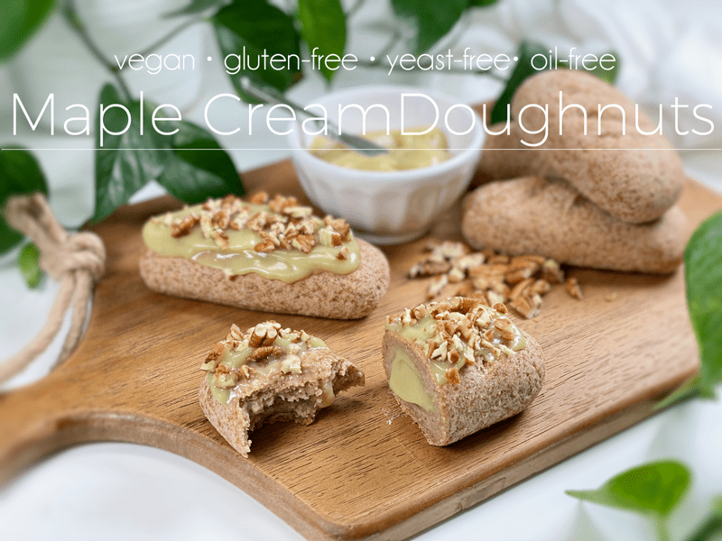
I must admit that doughnuts are on such a high pedestal in my mind that I never thought I would make the attempt. I have numerous RAW VEGAN pastry recipes on the site that I have made over the years, but raw cuisine is much more forgiving. In the raw world, we don’t get too caught up in making sure the appearance of the end product matches up to its cooked-world counterpart. BUT once you enter the cooked world, people have high standards and expectations. Even if one doesn’t bake with gluten, yeast, dairy, etc., people still want the end product to match up aesthetically.
To that I say… BAH! It’s taken me years to come to terms with that. I still aim for similarities, but as long as the food looks appealing, tastes amazing, and is nutrient-dense… then I am as happy as a clamshell sipping on a green smoothie (not sure where that reference came from).
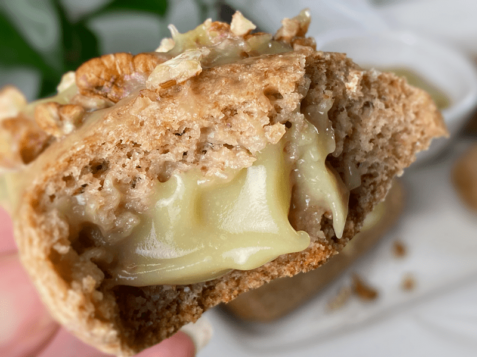
I know these doughnuts don’t look like the maple bars we used to buy from the grocery store bakery, but I have to say that after 1…2…4…5 bites, I am convinced that they taste even better than I could ever have imagined! The maple cream almost brought me to tears. Speaking of which, let’s talk about the base of this cream…
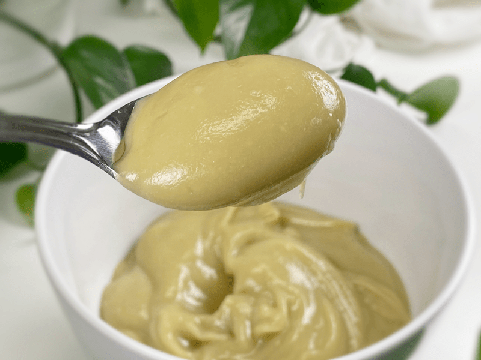
This maple cream is based on a vegetable — Japanese sweet potatoes! Add a little plant-based milk, a splash of maple syrup, and a couple of other supporting ingredients, and you have the most delicious maple cream ever. In fact, this cream could be its own recipe, served up as a pudding or custard.
Japanese Sweet Potatoes
- Japanese sweet potatoes are also called satsumaimo (さつまいも). They have a distinct purple or reddish skin, with a creamy white flesh that turns pale yellow after cooking. They are creamy, sweet, and taste like cake. If you can’t find them where you live, do not fret; you can use WHITE sweet potatoes (not the orange ones) in their place.
- Sweet potatoes are healthy and full of complex carbs. They’re an excellent source of energy, high in dietary fiber, and are rich in vitamins and minerals (notably, vitamin C, vitamin A, and vitamin B6).
- Look for them in your local Asian grocery stores, Whole Foods, Trader Joe’s, and Natural Grocers.
- Choose slender and smaller sweet potatoes with smooth skin. If you don’t use them right away, store them in a cool, dark, and dry place for about 3-4 weeks.
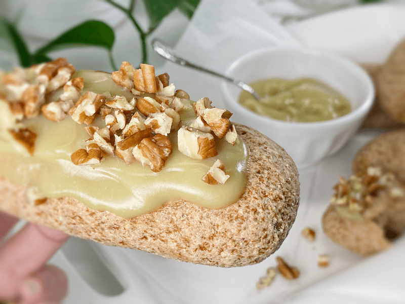
Maple Cream Filling
- This cream is velvety smooth on the tongue! You will have a hard time restraining yourself from eating it by the spoonful (I speak from experience).
- Japanese sweet potatoes are the base for this cream. After they are done cooking, make sure they have completely cooled before making the cream.
- For plant-based milk, I used oat milk. Select neutral-flavored plant milk and make sure it isn’t sweetened or flavored. Good options include almond milk, cashew milk, and oat milk.
- The sweet potato adds a natural sweetness to the cream, but I bumped up the sweetness level by adding maple syrup. To help keep the sugars as low as I could, I brightened the sweetness with a little stevia (link below). If you don’t wish to use stevia, be careful about adding too much maple syrup or the cream will be too runny and will quickly lose its perfect viscosity.
- You will need a piping bag, Aceto #230 tip, and a chopstick, to successfully fill the doughnut with the cream.
Well, I am going to stop here so you can read through the ingredient and preparation steps. In the meantime, I am going to go enjoy another Maple Cream Doughnut. blessings, amie sue
P.S. I have made this recipe many times over and I discovered something worth sharing. You can make up the dough, divide it, shape it, and FREEZE it for future use. Once you are ready to make them, remove them from the freezer, let them thaw on the counter, and proceed with the rest of the baking instructions. This is wonderful news if you ask me.

Ingredients
Yields 8 doughnuts (100 g each)
Psyllium Gel
Doughnut Batter
- 1 cup (100 g) gluten-free rolled oats, ground
- 3/4 cup + 1 Tbsp (100 g) fine almond flour
- 1/2 cup (100 g) raw hulled buckwheat, ground
- 5 Tbsp (40 g) arrowroot powder
- 1 Tbsp (10 g) coconut flour
- 1 tsp (4 g) baking powder
- 1/2 tsp (3 g) baking soda
- 1 tsp (6 g) sea salt
- 2 Tbsp (44 g) maple syrup
Maple Cream Filling – yields 2.5 cups (534 g)
- 3 cups (475 g) cooked Japanese sweet potatoes, skins removed
- 1/4 cup unsweetened plant-based milk
- 1/4 cup maple syrup
- 1 tsp (4) vanilla extract
- 1/2 (2 g) tsp maple extract
- 1/4 – 1/2 tsp liquid NuNatural Stevia
- 1/4 tsp (2 g) sea salt
Topping
- Maple cream filling
- Crushed pecans or walnuts
Preparation
Japenese Sweet Potato
- Wash and inspect the sweet potatoes, removing any damaged sections. Do not pierce or cut into the potato.
- Wrap in newspaper, followed by foil, to create a moist, steamed texture. Place on a baking sheet and slide into the oven.
- Bake at 375 degrees (F) for 50-65 minutes – this produces a super sweet, buttery cheesecake-like texture.
- Once the potatoes done baking and cool enough to handle, gently peel the skins off with your fingers.
- **If pressed for time, steam the sweet potatoes in an Instant Pot for roughly 10 minutes (size depending), letting it naturally release pressure. Poke with a fork; if it doesn’t glide in easily, cook a bit longer.
Psyllium Gel
- Quickly whisk together water, psyllium husk, and vanilla in a mixing bowl. It will instantly start to gel, which is to be expected. Set aside while you prepare the remaining ingredients,’ so it can thicken.
- Preheat the oven to 350 degrees (F) and place the rack in the center of the oven.
- Line a baking pan with parchment paper and set aside.
Dry Ingredients
- In the mixing bowl that we are going to knead the bread in, whisk together the oat flour, almond flour, buckwheat flour, arrowroot, coconut flour, baking soda, baking powder, and salt.
- If you have a sifter, use that to thoroughly incorporate all the dry ingredients.
- To make the oat and buckwheat flour, place the whole kernels in the blender and process to a powder. Easy.
Mixing the Dough
- Add the psyllium gel and drizzle the maple syrup around the bowl of dry ingredients.
- Using either a hand mixer or a free-standing mixer with dough attachments, knead for 5 minutes (set a timer on your phone) to ensure that it gets kneaded enough (don’t we all love feeling needed?).
- Start the mixer on low until the flour is folded in, then turn it up ONE speed. If you start off at too high a speed, the flour will jump out of the bowl.
- Divide the dough into 8 sections, each weighing 100 g each. Roll the dough into a ball, then into a log shape, place on the baking sheet, and square up each side, shaping it into a rectangle. Gently press flat.
- Score the top of each donut with the tip of a sharp knife, making 3 diagonal cuts, going no more than 1/4″ deep. These cuts allow the steam to release during the baking process. Do not skip this step.
- As a point of reference, my doughnuts measured 5.5″ x 1.75″ x .75″ before baking.
- Bake on the center rack for 50-60 minutes.
- Take them out of the oven and lift each onto a cooling rack. Wait until they are fully cooled before moving on to the next step.
Maple Cream Filling and Frosting
- In the blender, combine the peeled sweet potatoes, plant-based milk, maple syrup, vanilla and maple extract, stevia, and salt. Blend until velvety smooth.
- Divide the filling equally into two portions; scoop one portion into a piping bag, fitted with the Aceto #230 tip, and put the other portion of the filling in a small bowl.
- Holding the doughnut in the palm of your hand, poke and push a chopstick into the doughnut without poking it out the other side. As you drive the chopstick in, wiggle the tip of it back and forth, helping to make room for the filling. Do this to all the doughnuts.
- To fill the doughnut with cream, slide the tip of the piping tip in as far as possible. Gently squeeze the bag to release the cream into the doughnut. You can visually see the top of the doughnut rise. Slowly withdraw the piping tip, depositing cream as you pull out. Repeat this process until all doughnuts are filled.
- As a point of reference, I piped in 30+ g of filling per doughnut.
- For the topping, I spread the leftover cream on the top and sprinkled the crushed pecans into the cream so it will help prevent them from falling off.
- Due to the vegetable-based cream, you will want to store any leftover doughnuts in the fridge. Best enjoyed within a couple of days.
-
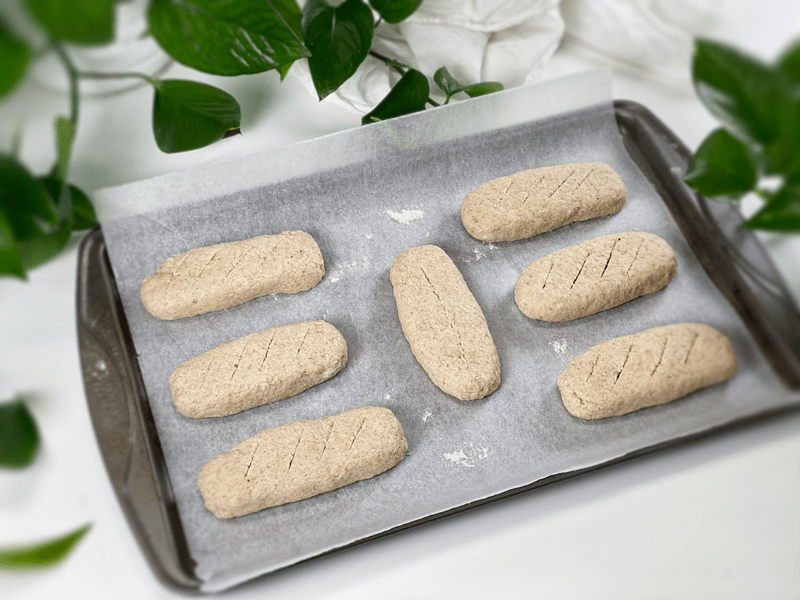
-
Ready for the oven. Don’t forget those score marks!
-
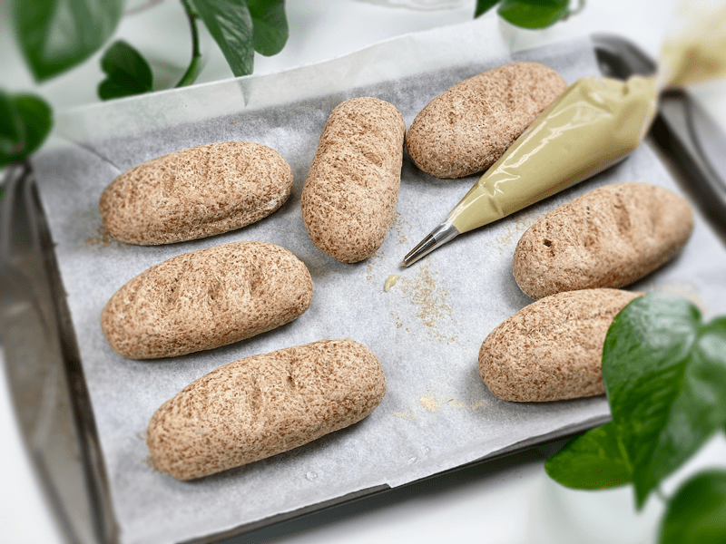
-
All done baking and ready to be filled with maple cream.
-
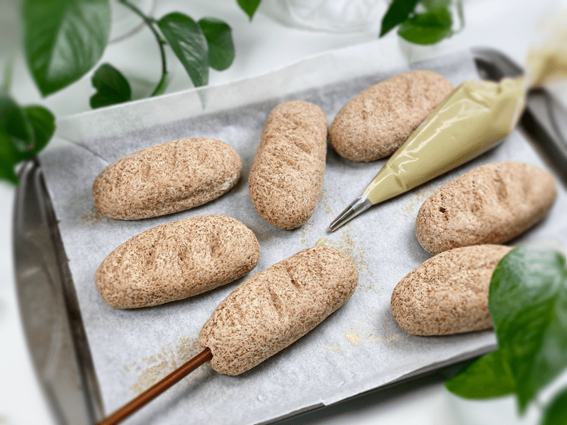
-
Odd, I know, but slide a chopstick into the doughnut, wiggling the tip back and forth (to create an air pocket). Be careful that you don’t puncture the other end.
-
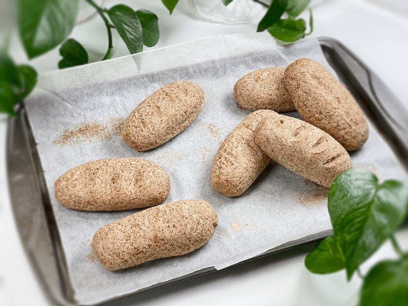
-
All piped. Ready for the toping!
-
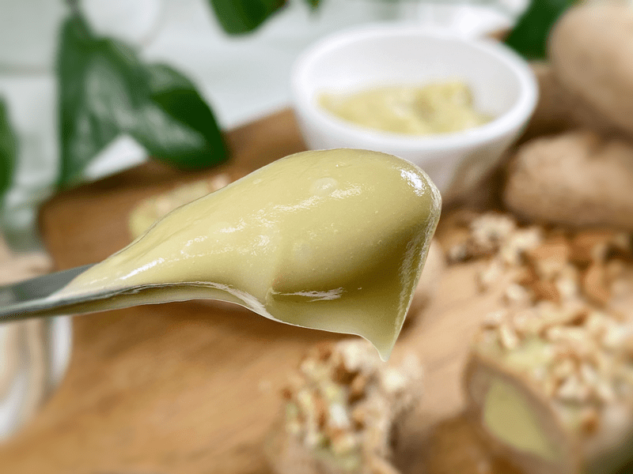
-
Spread a heavy layer of maple cream on top of each filled doughnut, followed with crushed pecans.
-
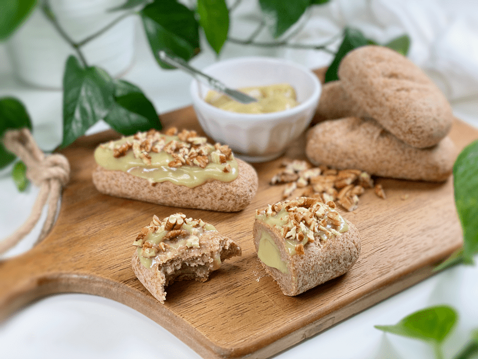
-
Enjoy!
-
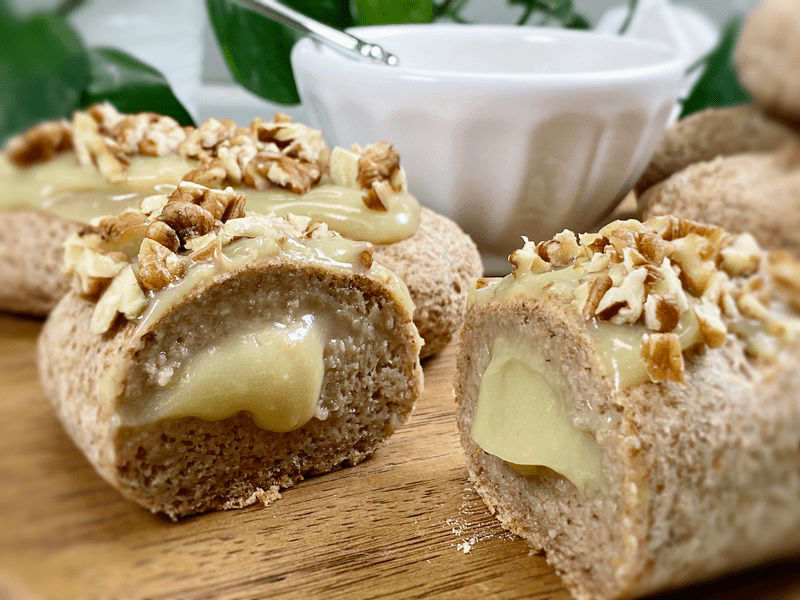
-
No, really… ENJOY!
© AmieSue.com